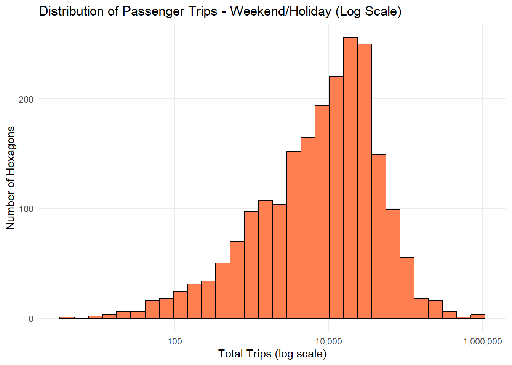
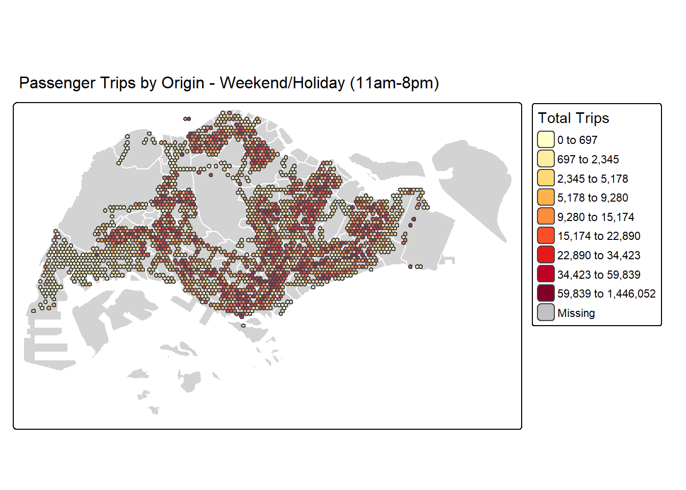
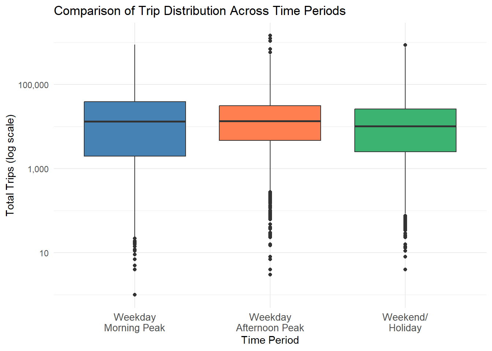
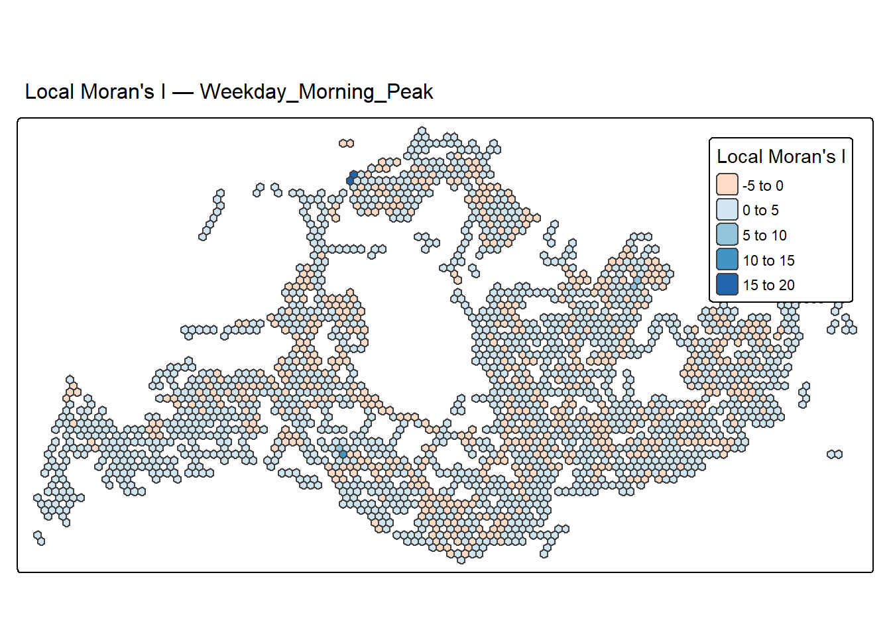
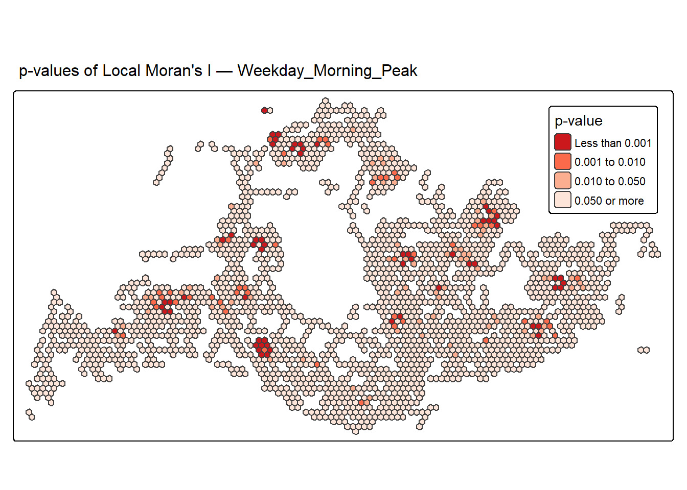
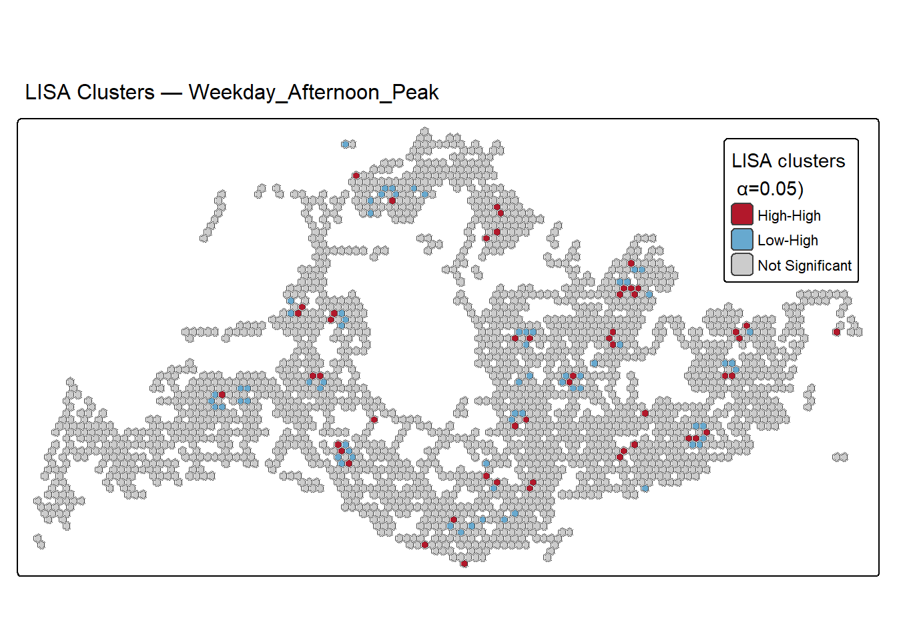
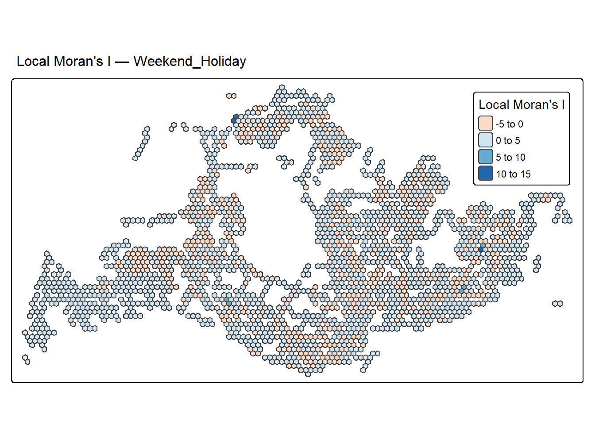
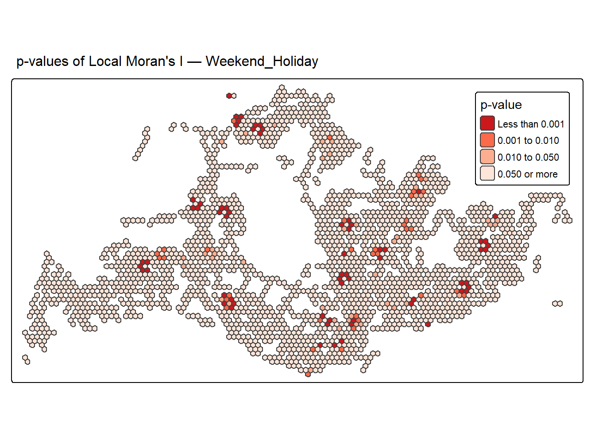
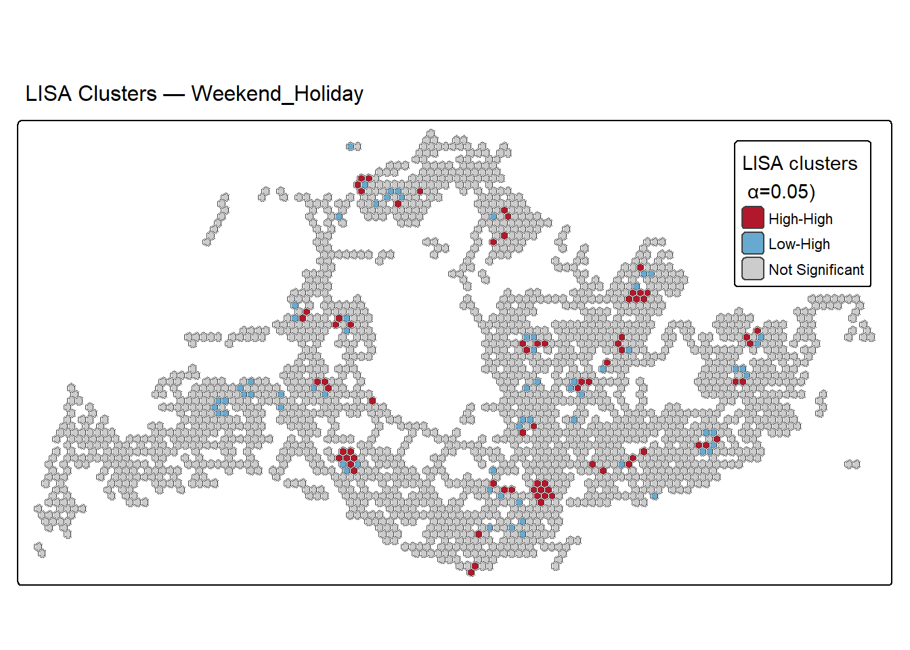

Install and Load R packages
pacman::p_load(dplyr, sfdep, spdep, tmap, sf, knitr, httr, rvest, tidyverse, ggplot2)This exercise applies advanced geospatial statistical methods to analyze bus passenger mobility patterns across Singapore. By leveraging Local Measures of Spatial Association (LMSA) and Emerging Hot Spot Analysis (EHSA), we move beyond simple mapping to identify where and how passenger demand clusters evolve over time. These insights can inform more responsive urban planning and public transport service optimization.
Urban mobility patterns reveal how cities function and evolve. This exercise analyzes bus passenger boarding patterns across Singapore using advanced geospatial statistical methods. By applying Local Measures of Spatial Association (LMSA) and Emerging Hot Spot Analysis (EHSA), we identify where passenger demand clusters are located and how they evolve over time during different periods of the week.
Identify spatial clustering patterns in bus passenger boarding volumes across Singapore’s hexagonal traffic analysis zones using Local Moran’s I, Local Geary’s C, and Getis-Ord Gi* statistics.
Detect emerging mobility trends by analyzing how passenger demand hotspots evolve over time – whether they are new, intensifying, diminishing, or sporadic.
Compare mobility patterns across weekday morning peak, weekday afternoon peak, and weekend/holiday periods.
Where are the spatial hotspots and coldspots of bus passenger boarding volumes during weekday morning peak, weekday afternoon peak, and weekend/holiday periods?
How do passenger boarding patterns differ spatially across neighborhoods and planning areas in Singapore?
Are there significant spatial outliers – locations with unusually high or low passenger volumes compared to their surroundings?
How are passenger demand hotspots evolving over time – are they new, intensifying, diminishing, or exhibiting sporadic patterns across the observed period?
What are the implications of these spatial and temporal patterns for public transport planning and urban mobility management?
| Dataset | Description | Source | Format |
|---|---|---|---|
| Passenger Volume by Origin Destination Bus Stops | Bus passenger tap-on/tap-off records for spatial-temporal mobility analysis | LTA DataMall | CSV |
| Bus Stop Location | Geospatial coordinates and identifiers for bus stops across Singapore | LTA DataMall | ESRI Shapefile |
| Master Plan 2019 Subzone Boundary (No Sea) | Planning area and subzone boundaries for spatial context | Data.gov.sg | ESRI Shapefile |
pacman::p_load(dplyr, sfdep, spdep, tmap, sf, knitr, httr, rvest, tidyverse, ggplot2)mpsz <- read_rds("data/rds/mpsz_sf.rds")BusStop <- st_read(dsn = "data/geospatial/BusStopLocation_Aug2025",
layer = "BusStop") %>%
st_transform(crs = 3414)odbus7 <- read_csv("data/aspatial/origin_destination_bus_202507.csv")
odbus8 <- read_csv("data/aspatial/origin_destination_bus_202508.csv")
odbus9 <- read_csv("data/aspatial/origin_destination_bus_202509.csv")
odbus <- bind_rows(odbus7, odbus8, odbus9)BusStop_in_SG <- st_join(
BusStop, mpsz,
join = st_within,
left = FALSE
)tm_shape(mpsz) +
tm_polygons() +
tm_shape(BusStop_in_SG) +
tm_dots()
hexagon <- st_make_grid(mpsz,
cellsize = 375,
what = "polygons",
square = FALSE) %>%
st_sf()| YEAR_MONTH | BUS_STOP_N | DAY_TYPE | HOUR_OF_DAY | TRIPS |
|---|---|---|---|---|
| 2025-07 | 71081 | WEEKDAY | 6 | 3 |
| 2025-07 | 52231 | WEEKENDS/HOLIDAY | 16 | 18 |
| 2025-07 | 09212 | WEEKENDS/HOLIDAY | 8 | 24 |
| 2025-07 | 09059 | WEEKENDS/HOLIDAY | 18 | 2 |
| 2025-07 | 84619 | WEEKENDS/HOLIDAY | 15 | 1 |
| 2025-07 | 20179 | WEEKDAY | 18 | 4 |
| BUS_STOP_N | HEX_ID | |
|---|---|---|
| 3092 | 25059 | H0398 |
| 2439 | 25751 | H0615 |
| 241 | 26379 | H0618 |
| 2258 | 26369 | H0619 |
| 2554 | 25761 | H0668 |
| 3611 | 26389 | H0671 |
trips <- inner_join(trips, bs_hex)
kable(head(trips))| YEAR_MONTH | BUS_STOP_N | DAY_TYPE | HOUR_OF_DAY | TRIPS | HEX_ID |
|---|---|---|---|---|---|
| 2025-07 | 71081 | WEEKDAY | 6 | 3 | H9534 |
| 2025-07 | 52231 | WEEKENDS/HOLIDAY | 16 | 18 | H7861 |
| 2025-07 | 09212 | WEEKENDS/HOLIDAY | 8 | 24 | H7370 |
| 2025-07 | 09059 | WEEKENDS/HOLIDAY | 18 | 2 | H7423 |
| 2025-07 | 84619 | WEEKENDS/HOLIDAY | 15 | 1 | H10399 |
| 2025-07 | 20179 | WEEKDAY | 18 | 4 | H4348 |
trips <- trips %>%
mutate(TIME_PERIOD = case_when(
DAY_TYPE == "WEEKDAY" & HOUR_OF_DAY >= 6 & HOUR_OF_DAY <= 8 ~ "Weekday_Morning_Peak",
DAY_TYPE == "WEEKDAY" & HOUR_OF_DAY >= 17 & HOUR_OF_DAY <= 19 ~ "Weekday_Afternoon_Peak",
DAY_TYPE %in% c("WEEKENDS/HOLIDAY") & HOUR_OF_DAY >= 11 & HOUR_OF_DAY <= 19 ~ "Weekend_Holiday",
TRUE ~ "Other"
))
kable(head(trips))| YEAR_MONTH | BUS_STOP_N | DAY_TYPE | HOUR_OF_DAY | TRIPS | HEX_ID | TIME_PERIOD |
|---|---|---|---|---|---|---|
| 2025-07 | 71081 | WEEKDAY | 6 | 3 | H9534 | Weekday_Morning_Peak |
| 2025-07 | 52231 | WEEKENDS/HOLIDAY | 16 | 18 | H7861 | Weekend_Holiday |
| 2025-07 | 09212 | WEEKENDS/HOLIDAY | 8 | 24 | H7370 | Other |
| 2025-07 | 09059 | WEEKENDS/HOLIDAY | 18 | 2 | H7423 | Weekend_Holiday |
| 2025-07 | 84619 | WEEKENDS/HOLIDAY | 15 | 1 | H10399 | Weekend_Holiday |
| 2025-07 | 20179 | WEEKDAY | 18 | 4 | H4348 | Weekday_Afternoon_Peak |
| YEAR_MONTH | HEX_ID | TIME_PERIOD | TOTAL_TRIPS |
|---|---|---|---|
| 2025-07 | H0398 | Other | 1519 |
| 2025-07 | H0398 | Weekday_Afternoon_Peak | 932 |
| 2025-07 | H0398 | Weekday_Morning_Peak | 328 |
| 2025-07 | H0398 | Weekend_Holiday | 830 |
| 2025-07 | H0615 | Other | 193 |
| 2025-07 | H0615 | Weekday_Afternoon_Peak | 44 |
| 2025-07 | H0615 | Weekday_Morning_Peak | 36 |
| 2025-07 | H0615 | Weekend_Holiday | 33 |
| 2025-07 | H0618 | Other | 564 |
| 2025-07 | H0618 | Weekday_Afternoon_Peak | 271 |
| HEX_ID | TIME_PERIOD | TOTAL_TRIPS |
|---|---|---|
| H0398 | Other | 4855 |
| H0398 | Weekday_Afternoon_Peak | 2771 |
| H0398 | Weekday_Morning_Peak | 1056 |
| H0398 | Weekend_Holiday | 3145 |
| H0615 | Other | 550 |
| H0615 | Weekday_Afternoon_Peak | 136 |
| H0615 | Weekday_Morning_Peak | 91 |
| H0615 | Weekend_Holiday | 140 |
| H0618 | Other | 1611 |
| H0618 | Weekday_Afternoon_Peak | 781 |
trips_hex_wide <- trips_hex %>%
pivot_wider(names_from = TIME_PERIOD,
values_from = TOTAL_TRIPS,
values_fill = 0)
kable(head(trips_hex_wide))| HEX_ID | Other | Weekday_Afternoon_Peak | Weekday_Morning_Peak | Weekend_Holiday |
|---|---|---|---|---|
| H0398 | 4855 | 2771 | 1056 | 3145 |
| H0615 | 550 | 136 | 91 | 140 |
| H0618 | 1611 | 781 | 252 | 419 |
| H0619 | 1748 | 627 | 299 | 480 |
| H0668 | 3327 | 2468 | 632 | 1173 |
| H0671 | 1324 | 1114 | 181 | 694 |
hexagon_trips <- hexagon %>%
left_join(trips_hex_wide, by = "HEX_ID") %>%
replace_na(list(Weekday_Morning_Peak = 0,
Weekday_Afternoon_Peak = 0,
Weekend_Holiday = 0,
Other = 0))
hexagon_trips <- hexagon_trips %>% filter(Weekday_Morning_Peak > 0 |
Weekday_Afternoon_Peak > 0|
Weekend_Holiday > 0|
Other > 0)
kable(head(hexagon_trips))| HEX_ID | Other | Weekday_Afternoon_Peak | Weekday_Morning_Peak | Weekend_Holiday | geometry |
|---|---|---|---|---|---|
| H0398 | 4855 | 2771 | 1056 | 3145 | POLYGON ((3792.538 27873.08… |
| H0615 | 550 | 136 | 91 | 140 | POLYGON ((4542.538 28522.6,… |
| H0618 | 1611 | 781 | 252 | 419 | POLYGON ((4542.538 30471.15… |
| H0619 | 1748 | 627 | 299 | 480 | POLYGON ((4542.538 31120.67… |
| H0668 | 3327 | 2468 | 632 | 1173 | POLYGON ((4730.038 28197.84… |
| H0671 | 1324 | 1114 | 181 | 694 | POLYGON ((4730.038 30146.39… |
summary_stats <- trips_hex %>%
group_by(TIME_PERIOD) %>%
summarise(
Min = min(TOTAL_TRIPS),
Q1 = quantile(TOTAL_TRIPS, 0.25),
Median = median(TOTAL_TRIPS),
Mean = mean(TOTAL_TRIPS),
Q3 = quantile(TOTAL_TRIPS, 0.75),
Max = max(TOTAL_TRIPS),
SD = sd(TOTAL_TRIPS),
Total_Hexagons = n()
)
kable(summary_stats)| TIME_PERIOD | Min | Q1 | Median | Mean | Q3 | Max | SD | Total_Hexagons |
|---|---|---|---|---|---|---|---|---|
| Other | 5 | 8768.5 | 35906 | 81396.19 | 93492.00 | 3308340 | 172725.28 | 2155 |
| Weekday_Afternoon_Peak | 3 | 4684.5 | 13422 | 29994.59 | 30956.75 | 1446052 | 69861.33 | 2140 |
| Weekday_Morning_Peak | 1 | 1964.0 | 13140 | 29903.32 | 38586.00 | 876254 | 50966.31 | 2139 |
| Weekend_Holiday | 4 | 2515.0 | 10111 | 23117.28 | 25821.00 | 867233 | 48795.19 | 2153 |
The summary statistics reveal relatively similar trip patterns across the three time periods.
All three periods show substantial standard deviations relative to their means, confirming the right-skewed distributions observed in the histograms. The similar minimum values (1-2 trips) and first quartiles (Q1 ranging 657-1,549) across periods indicate that low-activity hexagons maintain consistently minimal trip generation regardless of time period. The total number of active hexagons is comparable across all periods (2,135-2,152), suggesting stable spatial coverage of bus service demand throughout the week.
This check is crucial for us to decide which package to use: sfdep or spdep, because st_weights() of sfdep package is unable to calculate weights when a polygon has zero neighbors, while poly2nb() of spdep just creates an empty entry for isolated polygons making it possible to calculate metrics e.g. Moran’s I.
check_for_isolated_hexagons <- function(hex_grid, bus_stops) {
# Create neighbor list
nb <- poly2nb(hex_grid, queen = TRUE)
# Find isolated hexagons
n_neighbors <- card(nb)
isolated <- which(n_neighbors == 0)
if(length(isolated) > 0) {
cat("Found", length(isolated), "isolated hexagon(s)\n\n")
# Get isolated hexagons
isolated_hexagons <- hex_grid[isolated, ]
# Check if they contain bus stops using spatial intersection
bus_stops_in_isolated <- st_intersects(isolated_hexagons, bus_stops)
# Count bus stops in each isolated hexagon
n_bus_stops <- lengths(bus_stops_in_isolated)
# Create summary table
isolated_summary <- data.frame(
HEX_ID = isolated_hexagons$HEX_ID,
WEEKDAY_MORNING_PEAK = isolated_hexagons$Weekday_Morning_Peak,
WEEKDAY_AFTERNOON_PEAK = isolated_hexagons$Weekday_Afternoon_Peak,
WEEKEND_HOLIDAY = isolated_hexagons$Weekend_Holiday,
N_BUS_STOPS = n_bus_stops
)
cat("Isolated hexagons summary:\n")
print(kable(isolated_summary))
# Provide recommendations based on findings
has_bus_stops <- sum(n_bus_stops > 0)
cat("\n=== ANALYSIS ===\n")
cat("Isolated hexagons with bus stops:", has_bus_stops, "\n")
cat("Isolated hexagons without bus stops:", length(isolated) - has_bus_stops, "\n")
cat("\n=== RECOMMENDATION ===\n")
if(has_bus_stops > 0) {
cat("✓ Some isolated hexagons contain bus stops and have trip data\n")
cat("✓ Use spdep with zero.policy=TRUE to include them in analysis\n")
cat("✓ These hexagons represent valid data points (edge locations)\n")
} else {
cat("✗ Isolated hexagons have no bus stops\n")
cat("✓ Safe to remove them before analysis\n")
cat("✓ Can use either sfdep or spdep after removal\n")
}
# Show distribution of neighbors
cat("\n=== NEIGHBOR DISTRIBUTION ===\n")
print(table(n_neighbors))
return(list(
isolated_indices = isolated,
isolated_data = isolated_summary,
has_bus_stops = has_bus_stops > 0
))
} else {
cat("✓ No isolated hexagons found!\n")
cat("✓ You can use either spdep or sfdep approach.\n")
# Show distribution of neighbors
cat("\n=== NEIGHBOR DISTRIBUTION ===\n")
print(table(n_neighbors))
return(list(
isolated_indices = integer(0),
isolated_data = NULL,
has_bus_stops = FALSE
))
}
}isolated_results <- check_for_isolated_hexagons(
hex_grid = hexagon_trips,
bus_stops = BusStop_in_SG
)Found 21 isolated hexagon(s)
Isolated hexagons summary:
|HEX_ID | WEEKDAY_MORNING_PEAK| WEEKDAY_AFTERNOON_PEAK| WEEKEND_HOLIDAY| N_BUS_STOPS|
|:------|--------------------:|----------------------:|---------------:|-----------:|
|H0398 | 1056| 2771| 3145| 1|
|H0619 | 299| 627| 480| 1|
|H0777 | 348| 735| 384| 1|
|H0884 | 4205| 5389| 6665| 1|
|H1047 | 4512| 5399| 5495| 1|
|H2683 | 51| 1566| 2463| 2|
|H2898 | 931| 19311| 1167| 4|
|H3397 | 531| 958| 1462| 3|
|H4100 | 0| 0| 2984| 1|
|H5285 | 3639| 16246| 5137| 2|
|H5984 | 201| 276| 404| 2|
|H6037 | 1584| 42685| 35635| 1|
|H6200 | 933| 3492| 2001| 2|
|H6577 | 43| 774| 3168| 2|
|H6641 | 11985| 54702| 16272| 4|
|H7037 | 18| 1729| 1866| 1|
|H9258 | 0| 0| 103| 1|
|H11097 | 307| 1006| 1870| 1|
|H12339 | 8198| 11066| 24811| 1|
|H12346 | 46367| 132289| 102335| 2|
|H12455 | 31595| 105807| 99112| 1|
=== ANALYSIS ===
Isolated hexagons with bus stops: 21
Isolated hexagons without bus stops: 0
=== RECOMMENDATION ===
✓ Some isolated hexagons contain bus stops and have trip data
✓ Use spdep with zero.policy=TRUE to include them in analysis
✓ These hexagons represent valid data points (edge locations)
=== NEIGHBOR DISTRIBUTION ===
n_neighbors
0 1 2 3 4 5 6
21 77 234 376 514 509 424 | YEAR_MONTH | TOTAL_TRIPS |
|---|---|
| 2025-07 | 120274768 |
| 2025-08 | 120404700 |
| 2025-09 | 112652448 |
# Summarize total trips per hour per month
trips_summary <- trips %>%
group_by(YEAR_MONTH, HOUR_OF_DAY) %>%
summarise(total_trips = sum(TRIPS, na.rm = TRUE)) %>%
ungroup()
# Plot line chart
ggplot(trips_summary, aes(x = HOUR_OF_DAY, y = total_trips, color = YEAR_MONTH, group = YEAR_MONTH)) +
geom_line(size = 1.2) +
geom_point(size = 2) +
scale_x_continuous(breaks = 0:23) +
labs(
title = "Trips per Hour of Day by Month",
x = "Hour of Day",
y = "Total Trips",
color = "Year-Month"
) +
theme_minimal(base_size = 14)
ggplot(data = hexagon_trips,
aes(x = Weekday_Morning_Peak)) +
geom_histogram(bins = 30,
fill = "steelblue",
color = "black") +
scale_x_continuous(labels = scales::comma) +
labs(title = "Distribution of Passenger Trips - Weekday Morning Peak (Linear Scale)",
x = "Total Trips",
y = "Number of Hexagons") +
theme_minimal()
ggplot(data = hexagon_trips %>% filter(Weekday_Morning_Peak > 0), # filter out those <= 0 to avoid warning
aes(x = Weekday_Morning_Peak)) +
geom_histogram(bins = 30,
fill = "coral",
color = "black") +
scale_x_log10(labels = scales::comma) +
labs(title = "Distribution of Passenger Trips - Weekday Morning Peak (Log Scale)",
x = "Total Trips (log scale)",
y = "Number of Hexagons") +
theme_minimal()
The distribution is heavily right-skewed, with most hexagons (approximately 1,800) generating fewer than 50,000 trips during morning peak hours. This reveals significant spatial inequality in demand: while the majority of active hexagons serve moderate passenger volumes, a small number of critical nodes experience exceptionally high boarding activity exceeding 100,000 trips. This concentration suggests opportunities for targeted capacity planning in high-demand corridors.
ggplot(data = hexagon_trips,
aes(x = Weekday_Afternoon_Peak)) +
geom_histogram(bins = 30,
fill = "steelblue",
color = "black") +
scale_x_continuous(labels = scales::comma) +
labs(title = "Distribution of Passenger Trips - Weekday Afternoon Peak (Linear Scale)",
x = "Total Trips",
y = "Number of Hexagons") +
theme_minimal()
ggplot(data = hexagon_trips %>% filter(Weekday_Afternoon_Peak > 0), # filter out those <= 0 to avoid warning
aes(x = Weekday_Afternoon_Peak)) +
geom_histogram(bins = 30,
fill = "coral",
color = "black") +
scale_x_log10(labels = scales::comma) +
labs(title = "Distribution of Passenger Trips - Weekday Afternoon Peak (Log Scale)",
x = "Total Trips (log scale)",
y = "Number of Hexagons") +
theme_minimal()
The afternoon peak distribution differs significantly from morning peak. Morning shows a broader, flatter distribution with trip volumes spreading relatively evenly from 1,000 to 10,000+ trips. In contrast, afternoon exhibits a more concentrated, bell-shaped pattern with a sharp peak around 2,000-3,000 trips and a steeper drop-off. The afternoon distribution has fewer hexagons with extremely high trip volumes (10,000+), while morning has a longer right tail indicating more hexagons with very high boarding activity. This suggests more uniformity in afternoon trip generation across hexagons compared to morning’s greater variation in activity levels.
ggplot(data = hexagon_trips,
aes(x = Weekend_Holiday)) +
geom_histogram(bins = 30,
fill = "steelblue",
color = "black") +
scale_x_continuous(labels = scales::comma) +
labs(title = "Distribution of Passenger Trips - weekend/holiday Peak (Linear Scale)",
x = "Total Trips",
y = "Number of Hexagons") +
theme_minimal()
The linear scale histogram shows extreme right-skew similar to weekday patterns, with approximately 1,900+ hexagons concentrated in the low trip range (0-50,000 trips). Only a small number of hexagons exceed 50,000 trips, with the maximum reaching around 100,000-150,000 trips, lower than weekday morning peak’s maximum of nearly 300,000 trips.
ggplot(data = hexagon_trips %>% filter(Weekend_Holiday > 0), # filter out those <= 0 to avoid warning
aes(x = Weekend_Holiday)) +
geom_histogram(bins = 30,
fill = "coral",
color = "black") +
scale_x_log10(labels = scales::comma) +
labs(title = "Distribution of Passenger Trips - Weekend/Holiday (Log Scale)",
x = "Total Trips (log scale)",
y = "Number of Hexagons") +
theme_minimal()
On log scale, the weekend/holiday distribution displays a bell-shaped pattern with peak around 2,000-4,000 trips. The distribution appears more symmetric and concentrated compared to weekday morning’s flatter spread, but similar to weekday afternoon’s bell-shaped form. The right tail extends to approximately 100,000 trips, indicating fewer extreme high-volume hexagons than weekday peaks.
hexagon_trips_filtered <- hexagon_trips %>%
filter(Weekday_Morning_Peak > 0 |
Weekday_Afternoon_Peak > 0 |
Weekend_Holiday > 0)# Calculate common quantile breaks across all three periods
all_trips <- c(hexagon_trips_filtered$Weekday_Morning_Peak,
hexagon_trips_filtered$Weekday_Afternoon_Peak,
hexagon_trips_filtered$Weekend_Holiday)
common_breaks <- quantile(all_trips,
probs = seq(0, 1, length.out = 10),
na.rm = TRUE)
print(common_breaks) 0% 11.11111% 22.22222% 33.33333% 44.44444% 55.55556%
0.0000 697.2222 2344.8889 5178.3333 9280.0000 15174.4444
66.66667% 77.77778% 88.88889% 100%
22890.0000 34422.5556 59838.6667 1446052.0000 tm_shape(mpsz) +
tm_polygons(col = "lightgrey", border.col = "white") +
tm_shape(hexagon_trips_filtered) +
tm_fill(col = "Weekday_Morning_Peak",
palette = "YlOrRd",
breaks = common_breaks,
title = "Total Trips") +
tm_borders(alpha = 0.3) +
tm_layout(main.title = "Passenger Trips by Origin - Weekday Morning Peak (6am-9am)",
main.title.size = 1,
legend.outside = TRUE)
The spatial distribution of weekday morning peak passenger trips reveals distinct clustering patterns across Singapore. High-intensity boarding activity (dark red hexagons) is concentrated in several key areas: the Central Business District (CBD) and surrounding central regions, major residential estates in the north and northeastern areas, and established HDB townships in the western part of Singapore. These patterns reflect typical morning commute behavior, where passengers board buses from residential neighborhoods heading toward employment centers.
Notable spatial heterogeneity is evident, with mid-to-high trip generation hexagons (orange to red) forming contiguous clusters, suggesting neighborhood-level demand patterns rather than isolated hotspots. The eastern and northeastern regions show moderate activity levels, while certain peripheral areas display lower boarding volumes.
The quantile classification reveals that the top 20% of hexagons (darkest red) handle significantly higher passenger volumes (59,839+ trips), indicating substantial spatial inequality in bus service demand. This concentration suggests that targeted service planning focusing on these high-demand corridors could efficiently serve a large proportion of morning peak passengers. The spatial continuity of medium-to-high demand areas also indicates potential for effective trunk-and-feeder route optimization.
tm_shape(mpsz) +
tm_polygons(col = "lightgrey", border.col = "white") +
tm_shape(hexagon_trips_filtered) +
tm_fill(col = "Weekday_Afternoon_Peak",
palette = "YlOrRd",
breaks = common_breaks,
title = "Total Trips") +
tm_borders(alpha = 0.3) +
tm_layout(main.title = "Passenger Trips by Origin - Weekday Afternoon Peak (5pm-8pm)",
main.title.size = 1,
legend.outside = TRUE)
The afternoon peak spatial distribution displays high-intensity boarding activity across multiple areas of Singapore, with dark red hexagons visible in the central region and various other locations across the island. The pattern shows widespread moderate-to-high activity (orange to red) across much of the developed area, similar in overall coverage to the morning peak.
However, a closer comparison between morning and afternoon maps reveals a subtle but notable geographic shift in the concentration of highest-intensity hexagons (darkest red, representing 59,839+ trips). The central region appears to intensify during afternoon peak, with an increased density of dark red hexagons clustering in what appears to be the CBD and downtown commercial districts. Conversely, some peripheral residential areas that showed darker red coloring during morning peak now display lighter red or orange shades, indicating reduced boarding intensity.
This spatial reversal reflects the inverse commuting pattern: during morning hours, passengers board buses predominantly from dispersed residential neighborhoods traveling toward employment centers; during afternoon hours, boarding concentrates in central business districts as workers depart from offices. The moderate activity levels (orange) that remain consistent across both periods likely represent mixed-use areas with stable demand, transit hubs serving bidirectional flows, or commercial zones with both morning and evening activity. The shift supports the hypothesis that afternoon peak captures workers’ end-of-day mobility, potentially including intermediate trips for errands or dining before returning home, explaining why some commercial corridors maintain high boarding activity during evening hours.
tm_shape(mpsz) +
tm_polygons(col = "lightgrey", border.col = "white") +
tm_shape(hexagon_trips_filtered) +
tm_fill(col = "Weekend_Holiday",
palette = "YlOrRd",
breaks = common_breaks,
title = "Total Trips") +
tm_borders(alpha = 0.3) +
tm_layout(main.title = "Passenger Trips by Origin - Weekend/Holiday (11am-8pm)",
main.title.size = 1,
legend.outside = TRUE)
The weekend/holiday spatial pattern shows high-intensity boarding activity (dark red hexagons) distributed across multiple regions of Singapore, similar to weekday patterns. Red and orange hexagons are visible in central, northern, western, and eastern areas. The overall spatial distribution appears comparable to both weekday morning and afternoon peaks, with moderate-to-high activity spread across developed areas rather than showing a distinctly different geographic pattern.
trips_boxplot <- hexagon_trips_filtered %>%
st_drop_geometry() %>%
select(Weekday_Morning_Peak, Weekday_Afternoon_Peak, Weekend_Holiday) %>%
pivot_longer(everything(),
names_to = "TIME_PERIOD",
values_to = "TOTAL_TRIPS") %>%
filter(TOTAL_TRIPS > 0) %>%
mutate(TIME_PERIOD = factor(TIME_PERIOD,
levels = c("Weekday_Morning_Peak",
"Weekday_Afternoon_Peak",
"Weekend_Holiday"),
labels = c("Weekday\nMorning Peak",
"Weekday\nAfternoon Peak",
"Weekend/\nHoliday")))ggplot(data = trips_boxplot,
aes(x = TIME_PERIOD, y = TOTAL_TRIPS, fill = TIME_PERIOD)) +
geom_boxplot() +
scale_y_log10(labels = scales::comma) +
scale_fill_manual(values = c("steelblue", "coral", "mediumseagreen")) +
labs(title = "Comparison of Trip Distribution Across Time Periods",
x = "Time Period",
y = "Total Trips (log scale)") +
theme_minimal() +
theme(legend.position = "none",
axis.text.x = element_text(size = 10))
The box plots reveal similar distributions of trips per hexagon across all three time periods on log scale. All three periods show comparable median values (horizontal lines within boxes around 2,000-4,000 trips / hexagon) and interquartile ranges (box heights). Each period displays numerous outliers above the upper whisker, with weekday afternoon peak showing the most prominent extreme outliers exceeding 100,000 trips / hexagon. The weekend/holiday distribution has a slightly lower median and narrower interquartile range compared to weekday peaks.
Overall, the three distributions are remarkably similar in shape and spread, with the main differences appearing in the frequency and magnitude of extreme high-value outliers rather than in the typical hexagon’s trip volume.
Spatial weights are computed using Queen contiguity, where hexagons sharing any edge or vertex are considered neighbors. This approach is appropriate for hexagonal tessellation because:
Hexagons naturally share edges with six adjacent cells, creating a uniform neighborhood structure ideal for spatial analysis;
Queen contiguity captures the continuous nature of bus passenger mobility, where demand patterns can diffuse across adjacent zones regardless of edge versus vertex contact;
The row-standardized weights (style = “W”) ensure each neighbor contributes equally to the spatial lag calculation, preventing bias from hexagons with varying numbers of neighbors.
Alternative approaches such as distance-based weights were considered but rejected, as they would introduce arbitrary distance thresholds and create inconsistent neighborhood sizes that could distort spatial autocorrelation measures in our regular hexagonal grid.
As EDA above, we have 21 isolated hexagons contain bus stops and have trip data, therefore, we will use spdep with zero.policy=TRUE to include them in analysis as these hexagons represent valid data points (edge locations).
wm_q_spdep <- hexagon_trips_filtered
# Create neighbors using spdep's poly2nb (not sfdep's st_contiguity)
nb_spdep <- poly2nb(wm_q_spdep, queen = TRUE)
# Check for regions with no neighbors
summary(nb_spdep)Neighbour list object:
Number of regions: 2155
Number of nonzero links: 8818
Percentage nonzero weights: 0.1898784
Average number of links: 4.091879
21 regions with no links:
1, 4, 9, 19, 36, 178, 202, 276, 351, 617, 769, 780, 810, 891, 905, 987,
1659, 2008, 2137, 2138, 2141
40 disjoint connected subgraphs
Link number distribution:
0 1 2 3 4 5 6
21 77 234 376 514 509 424
77 least connected regions:
2 3 5 8 24 25 37 54 62 74 81 88 93 129 157 179 185 237 245 258 275 283 341 345 346 362 369 370 410 516 531 574 596 602 603 631 671 706 738 774 784 840 866 901 921 931 967 980 1021 1023 1025 1036 1041 1059 1091 1378 1392 1409 1439 1453 1455 1477 1524 1720 1804 1827 2104 2109 2113 2129 2133 2143 2144 2146 2147 2148 2153 with 1 link
424 most connected regions:
68 76 82 95 103 106 107 108 110 111 116 148 180 191 207 210 218 219 220 221 225 226 227 233 234 235 239 240 241 242 248 249 250 255 256 257 261 263 282 293 297 301 310 322 323 324 325 339 342 350 374 382 385 387 391 394 396 402 403 407 414 421 422 427 430 433 444 448 461 466 467 475 476 477 480 483 491 495 496 504 519 520 536 537 549 573 579 586 594 600 601 606 614 619 621 627 628 635 642 643 660 673 674 684 686 707 714 721 732 735 739 744 753 761 765 771 772 776 781 782 783 785 787 791 792 801 802 803 812 814 830 836 843 855 856 857 869 874 875 882 887 892 894 896 897 903 909 916 917 927 936 945 946 955 960 970 974 984 990 998 1020 1029 1031 1043 1061 1064 1074 1079 1080 1099 1100 1112 1117 1118 1119 1138 1141 1142 1143 1144 1146 1149 1155 1160 1164 1165 1166 1171 1182 1183 1184 1188 1189 1190 1192 1193 1199 1202 1206 1207 1208 1209 1210 1212 1224 1228 1229 1230 1232 1233 1249 1250 1253 1254 1255 1261 1262 1265 1271 1274 1275 1280 1281 1282 1285 1289 1293 1294 1301 1302 1303 1307 1311 1312 1314 1315 1321 1322 1323 1335 1336 1338 1339 1340 1341 1342 1343 1346 1351 1352 1353 1354 1355 1357 1358 1359 1365 1366 1367 1368 1371 1372 1373 1382 1383 1384 1385 1386 1387 1396 1397 1398 1415 1417 1448 1450 1468 1470 1473 1481 1494 1499 1502 1517 1534 1535 1545 1546 1560 1561 1565 1571 1572 1579 1580 1581 1587 1593 1594 1599 1605 1606 1607 1611 1612 1617 1618 1623 1629 1631 1637 1638 1641 1647 1651 1652 1653 1656 1662 1667 1668 1669 1670 1671 1676 1679 1680 1683 1690 1691 1693 1694 1695 1696 1703 1707 1710 1716 1722 1724 1726 1741 1742 1743 1749 1754 1761 1762 1769 1771 1773 1774 1775 1780 1782 1786 1787 1793 1796 1797 1801 1805 1814 1820 1825 1829 1832 1833 1836 1841 1842 1845 1856 1857 1865 1866 1867 1872 1874 1878 1886 1890 1900 1905 1913 1915 1916 1922 1923 1926 1927 1934 1935 1943 1944 1952 1954 1957 1960 1963 1964 1974 1981 1989 2014 2031 2039 2041 2046 2051 2052 2055 2058 2059 2064 2065 2066 2067 2070 2071 2074 2081 2082 2089 with 6 linksHexagons with no neighbors: 21 After removal, hexagons with no neighbors: 0 # Create listw object with row-standardized weights
listw_spdep <- nb2listw(nb_spdep, style = "W", zero.policy = TRUE)
# Store nb in the dataframe for reference
wm_q_spdep$nb_spdep <- nb_spdep
cat("\nFinal dataset:\n", "Total hexagons:", nrow(wm_q_spdep), "\n", "Neighbor structure created successfully!\n")
Final dataset:
Total hexagons: 2134
Neighbor structure created successfully!For convenience, 4 reusable functions are created as below:
Function: calculate_local_morans()
| Parameter | Description |
|---|---|
data |
sf object containing the target numeric column used for Local Moran’s I calculation. |
listw |
spdep::listw object representing spatial weights; must have the same row order as data. |
column_name |
Character string specifying the name of the variable to analyze. |
nsim |
Number of permutations for localmoran_perm() (used for significance testing). |
sig |
Alpha level for significance threshold (e.g., 0.05). |
seed |
Random seed value to ensure reproducible permutation results. |
make_maps |
Logical flag indicating whether to build tmap visualization objects (TRUE or FALSE). |
Returns: A list containing:
data (enriched sf object with LISA results)
map_ii (Local Moran’s I map)
map_pii (p-values of Moran’s I map)
map_quadrant (LISA cluster map)
calculate_local_moran <- function(data, listw, column_name,
nsim = 99, sig = 0.05, seed = 123) {
stopifnot(column_name %in% names(data))
x <- data[[column_name]]
if (!is.numeric(x)) stop("`column_name` must be numeric.")
if (length(x) != length(listw$neighbours))
stop("`listw` size does not match number of rows in `data`.")
set.seed(seed)
# Local Moran with permutations
lm_res <- localmoran_perm(
x = x,
listw = listw,
nsim = nsim,
zero.policy = TRUE,
alternative = "two.sided"
)
lm_df <- as.data.frame(lm_res)
names(lm_df)[1:5] <- c("Ii", "E_Ii", "Var_Ii", "Z_Ii", "p_value")
# Spatial lag + centered vars for quadrants
x_lag <- lag.listw(listw, x, zero.policy = TRUE)
x_c <- x - mean(x, na.rm = TRUE)
xlc <- x_lag - mean(x_lag, na.rm = TRUE)
# Attach results
data %>%
mutate(
!!sym(column_name) := x, # keep original explicitly
Ii = lm_df$Ii,
E_Ii = lm_df$E_Ii,
Var_Ii = lm_df$Var_Ii,
Z_Ii = lm_df$Z_Ii,
p_value = lm_df$p_value,
x_centered = x_c,
lag_centered = xlc,
quadrant = case_when(
x_centered > 0 & lag_centered > 0 ~ "High-High",
x_centered < 0 & lag_centered < 0 ~ "Low-Low",
x_centered > 0 & lag_centered < 0 ~ "High-Low",
x_centered < 0 & lag_centered > 0 ~ "Low-High",
TRUE ~ "Undefined"
),
moran_class = if_else(p_value < sig, quadrant, "Not Significant"),
.sig_alpha = sig # stash alpha used for labeling
)
}plot_moran_ii <- function(lisa_sf, column_name, midpoint = 0, reverse = TRUE) {
tm_shape(lisa_sf) +
tm_polygons(fill = "Ii",
fill.scale = tm_scale_intervals(style = "pretty",
n = 5,
values = "brewer.rd_bu"),
fill.legend = tm_legend(title = "Local Moran's I",
position = tm_pos_in("right", "top")),
) +
tm_borders(fill_alpha = 0.5) +
tm_title(sprintf("Local Moran's I — %s", column_name), size = 1) +
tm_layout(legend.outside = TRUE)
}plot_moran_ii_pvalue <- function(lisa_sf, column_name, reverse = FALSE) {
tm_shape(lisa_sf) +
tm_polygons(
fill = "p_value",
fill.scale = tm_scale_intervals(
breaks = c(-Inf, 0.001, 0.01, 0.05, Inf),
values = "-brewer.Reds"
),
fill.legend = tm_legend(
title = "p-value",
position = tm_pos_in("right", "top")
)
) +
tm_borders(fill_alpha = 0.5) +
tm_title(sprintf("p-values of Local Moran's I — %s", column_name), size = 1) +
tm_layout(legend.outside = TRUE)
}plot_moran_quadrant <- function(lisa_sf, column_name, sig = 0.05) {
# if user supplies a new alpha, relabel significance
if (!is.null(sig)) {
lisa_sf <- lisa_sf %>%
mutate(moran_class = if_else(p_value < sig, quadrant, "Not Significant"),
.sig_alpha = sig)
}
alpha_used <- unique(lisa_sf$.sig_alpha)
if (length(alpha_used) != 1 || is.na(alpha_used)) alpha_used <- NA_real_
cluster_palette <- c(
"High-High" = "#b2182b",
"Low-Low" = "#2166ac",
"High-Low" = "#ef8a62",
"Low-High" = "#67a9cf",
"Not Significant" = "grey80",
"Undefined" = "grey60"
)
tm_shape(lisa_sf) +
tm_polygons(
fill = "moran_class", # Changed from 'col' to 'fill'
fill.scale = tm_scale_categorical(
values = cluster_palette
),
fill.legend = tm_legend(
title = sprintf("LISA clusters\n α=%s)",
ifelse(is.na(alpha_used), "—", format(alpha_used))),
position = c("right", "top")
)
) +
tm_borders(lwd = 0.5, col = "white") +
tm_layout(
main.title = sprintf("LISA Clusters — %s", column_name),
main.title.size = 1,
legend.outside = TRUE,
legend.outside.position = "right" # Ensures legend is on the right
)
}lisa_wdm <- calculate_local_moran(
data = wm_q_spdep,
listw = listw_spdep,
column_name = "Weekday_Morning_Peak"
)
tmap_mode("plot")
plot_moran_ii(lisa_wdm, "Weekday_Morning_Peak")
plot_moran_ii_pvalue(lisa_wdm, "Weekday_Morning_Peak")
plot_moran_quadrant(lisa_wdm, "Weekday_Morning_Peak")
The three maps collectively reveal the spatial structure of morning peak boarding patterns across Singapore.
The Local Moran’s I statistic map shows most hexagons exhibit weak spatial correlation (light blue, 0-5), with concentrated pockets of strong autocorrelation (orange to dark blue, 10-20) in northern, central, and eastern regions.
The p-value map identifies where these patterns are statistically significant: dark red clusters (p < 0.001) concentrate in specific zones, while the majority remains white (p ≥ 0.05), indicating random spatial patterns.
The LISA clusters map synthesizes these findings into actionable categories. - High-High clusters (dark red, 99 hexagons, 4.6%) represent statistically significant hotspots in residential estates where high boarding activity is surrounded by similarly high values—priority zones for bus capacity planning. - Low-High outliers (light blue, 77 hexagons, 3.6%) indicate locations with lower boarding surrounded by high-activity neighbors, possibly representing parks, industrial zones, or transit-dependent areas worth investigating. - The overwhelming grey coverage (91.8% not significant) confirms that meaningful spatial clustering is highly localized. - The absence of Low-Low coldspots suggests relatively uniform baseline coverage, while missing High-Low patterns indicate demand is geographically coherent without isolated anomalies.
lisa_wda <- calculate_local_moran(
data = wm_q_spdep,
listw = listw_spdep,
column_name = "Weekday_Afternoon_Peak"
)
tmap_mode("plot")
plot_moran_ii(lisa_wda, "Weekday_Afternoon_Peak")
plot_moran_ii_pvalue(lisa_wda, "Weekday_Afternoon_Peak")plot_moran_quadrant(lisa_wda, "Weekday_Afternoon_Peak")
The afternoon peak spatial analysis reveals a distinctly different clustering pattern compared to morning peak.
The Local Moran’s I statistic map shows more dispersed moderate values (light blue, 0-5) across the island, with fewer intense hotspots (orange, 5-10) scattered rather than concentrated. Notably, the central region displays stronger autocorrelation, reflecting the shift from residential origins (morning) to employment center origins (afternoon).
The p-value map identifies significant clusters distributed more evenly across Singapore, with dark red concentrations (p < 0.001) appearing in central, western, eastern, and northern zones. This wider geographic spread suggests afternoon boarding activity is less concentrated than morning patterns, consistent with workers departing from diverse employment locations rather than clustered residential neighborhoods.
The LISA clusters map reveals:
The more scattered, less cohesive clustering pattern reflects Singapore’s polycentric employment structure, where afternoon departures originate from multiple business hubs rather than the concentrated residential-to-work flow of morning peak.
lisa_wdh <- calculate_local_moran(
data = wm_q_spdep,
listw = listw_spdep,
column_name = "Weekend_Holiday"
)
tmap_mode("plot")
plot_moran_ii(lisa_wdh, "Weekend_Holiday")
plot_moran_ii_pvalue(lisa_wdh, "Weekend_Holiday")
plot_moran_quadrant(lisa_wdh, "Weekend_Holiday")
The weekend/holiday spatial patterns reveal distinct recreational and leisure-oriented clustering compared to weekday commuter flows.
The Local Moran’s I statistic map displays moderate positive autocorrelation (light blue to blue, 0-10) broadly distributed across Singapore, with notable concentrations in central, eastern, and southern regions. The more uniform spread of orange patches (5-10) suggests weekend boarding activity is less polarized between residential and employment zones, reflecting diverse trip purposes including shopping, dining, and recreation.
The p-value map shows significant clusters (dark red, p < 0.001) scattered widely across the island, particularly in central urban areas, eastern residential-commercial zones, and southern regions—likely corresponding to major shopping districts, entertainment precincts, and recreational destinations. This geographic diversity contrasts with weekday patterns’ residential-employment dichotomy.
The LISA clusters map identifies: - 84 High-High clusters (3.9%), falling between morning peak (99) and afternoon peak (51), representing mixed-use zones serving weekend activities. - Low-High outliers number 66 (3.1%), the lowest of three periods, suggesting more spatially coherent leisure travel patterns.
The clusters’ widespread distribution across residential neighborhoods, commercial centers, and recreational areas reflects Singapore’s multi-nodal weekend mobility, where trips originate from and target diverse locations rather than following the concentrated commuter corridors of weekdays.
calculate_gi_star <- function(data, column_name) {
# Extract the variable as a vector
x <- data[[column_name]]
nb_list <- data$nb
wt_list <- data$wt
# Calculate Gi* using spdep
gi_result <- spdep::localG_perm(
x = x,
listw = nb2listw(nb_list, wt_list, style = "B", zero.policy = TRUE), # Binary weights for Gi*
nsim = 99,
zero.policy = TRUE
)
# Get p-values
p_vals <- attr(gi_result, "pseudo-p")
# Add results back to data
data %>%
mutate(
Gi_star = as.vector(gi_result),
p_value_gi = p_vals,
# Classification
gi_class = case_when(
p_value_gi >= 0.05 ~ "Not Significant",
Gi_star > 0 ~ "Hot Spot",
Gi_star < 0 ~ "Cold Spot",
TRUE ~ "Not Significant"
)
)
}